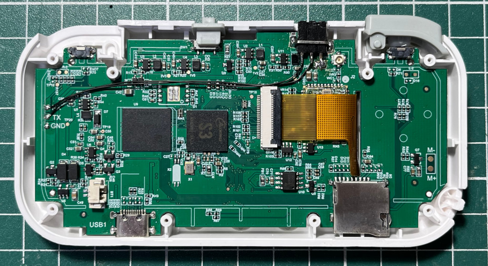
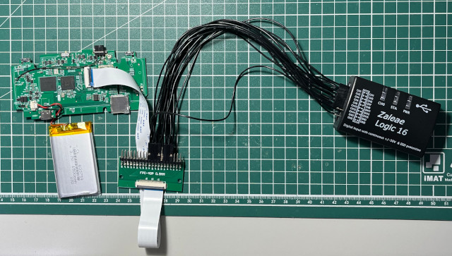
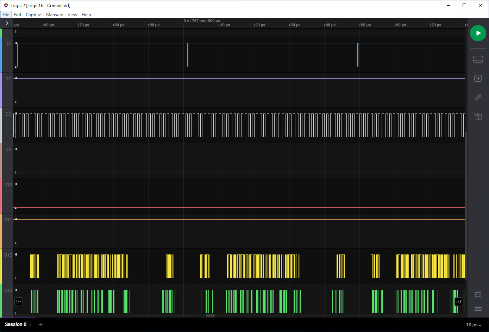
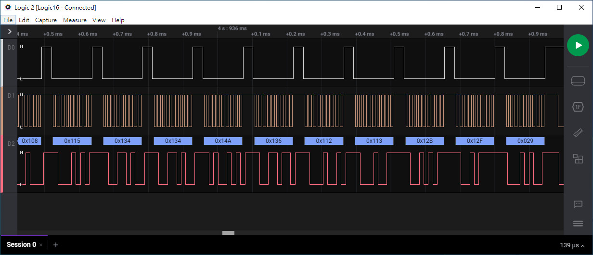
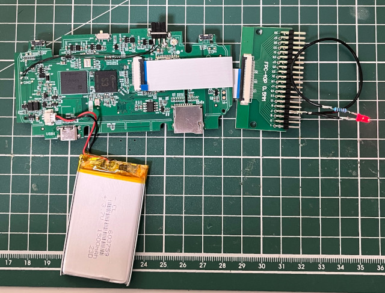

Steward
分享是一種喜悅、更是一種幸福
掌機 - TRIMUI SMART - 找出LCD腳位和初始化步驟
先來張高清照片

寨機邏輯分析儀出場

由於LCD是24Pin，司徒這個寨機邏輯分析儀只有16通道，因此，需要分兩次量測，不過就訊號來看，這個屏應該是RGB屏

LCD腳位
| PIN 1 | 3.3V |
|---|---|
| PIN 2 | GND |
| PIN 3 | RESET |
| PIN 4 | SPI_CS |
| PIN 5 | SPI_CLK |
| PIN 6 | VSYNC |
| PIN 7 | HSYNC |
| PIN 8 | 3.3V |
| PIN 9 | CLK |
| PIN 10 | SPI_SDA |
| PIN 11 | GND |
| PIN 12 | 3.3V |
| PIN 13 | DATA |
| PIN 14 | DATA |
| PIN 15 | DATA |
| PIN 16 | DATA |
| PIN 17 | DATA |
| PIN 18 | DATA |
| PIN 19 | GND |
| PIN 20 | GND |
| PIN 21 | GND |
| PIN 22 | GND |
| PIN 23 | GND |
| PIN 24 | 3.3V |
SPI初始化資料

最高位元是CMD或DAT
0x0004 0x0000 0x0000 0x0000 0x0011 0x00B0 0x0111 0x01F4 0x00B1 0x01E2 0x0110 0x0110 0x0036 0x0120 0x003A 0x0155 0x00B2 0x0120 0x0120 0x0100 0x0122 0x0122 0x00B7 0x0175 0x00BB 0x0113 0x00C0 0x012E 0x00C2 0x0101 0x00C3 0x0113 0x00C4 0x0120 0x00C6 0x010F 0x00D0 0x01A4 0x01A1 0x00D6 0x01A1 0x0021 0x00E0 0x01D0 0x0108 0x0110 0x010D 0x010C 0x0107 0x0137 0x0153 0x014C 0x0139 0x0115 0x0115 0x012A 0x012D 0x00E1 0x01D0 0x010D 0x0112 0x0108 0x0108 0x0115 0x0134 0x0134 0x014A 0x0136 0x0112 0x0113 0x012B 0x012F 0x0029
接著使用LED點燈方式，依序把對應腳位找出來

LCD腳位
| PIN 1 | 3.3V | |
|---|---|---|
| PIN 2 | GND | |
| PIN 3 | RESET | PD0 |
| PIN 4 | SPI_CS | PD10 |
| PIN 5 | SPI_CLK | PD11 |
| PIN 6 | VSYNC | PD21 |
| PIN 7 | HSYNC | PD20 |
| PIN 8 | 3.3V | |
| PIN 9 | CLK | P18 |
| PIN 10 | SPI_SDA | P12 |
| PIN 11 | GND | |
| PIN 12 | 3.3V | |
| PIN 13 | D0 | PD3 |
| PIN 14 | D1 | PD4 |
| PIN 15 | D2 | PD5 |
| PIN 16 | D3 | PD6 |
| PIN 17 | D4 | PD7 |
| PIN 18 | D5 | PD8 |
| PIN 19 | GND | |
| PIN 20 | GND | |
| PIN 21 | GND | |
| PIN 22 | GND | |
| PIN 23 | GND | |
| PIN 24 | 3.3V |